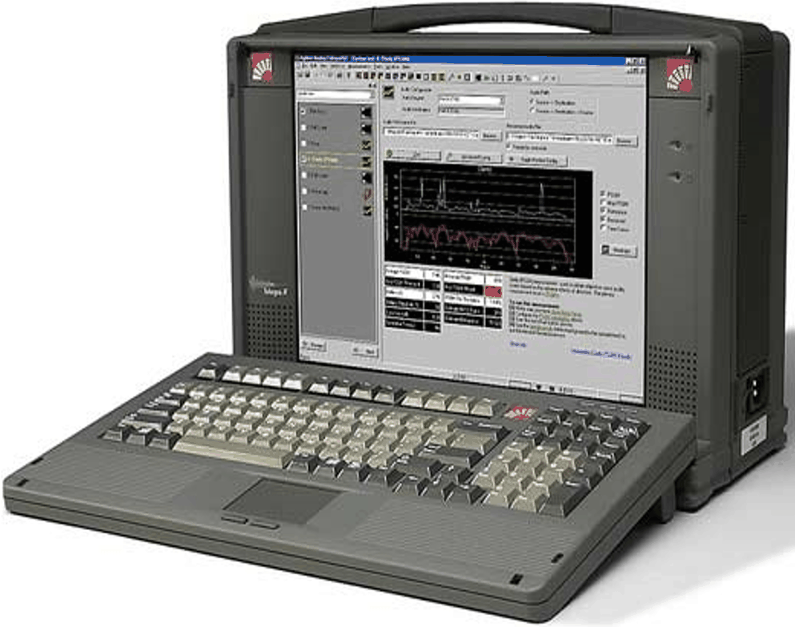

보라시스(주)
처음으로
보라시스소개
사업영역
제품소개
오시는 길
제품소개(VQT)
Smart CallGen
TAMS
TAS/PE
VoiceChecker
WIPS
VQT
VQT

구성요소
Acquisition Card / Test Interface Ports
Analog FXO and E&M
10/100 Ethernet (VoIP) interfaces
VQT Application
Intuitive(직관) and easy-to-use software
Provide necessary steps to test voice quality calculates and displays measurement results in both graphical and spreadsheet formats
VQT Hardware Platforms
VQT Portable Analyzer Other VQT hardware
MPU (Multi-Port Unit)
측정요소
Voice Quality definition
PAMS PESQ
Echo PACE Echo Doubletalk
Delay
VAD
DTMF Tone measuremen
Signal Loss measurement
Impulse Response